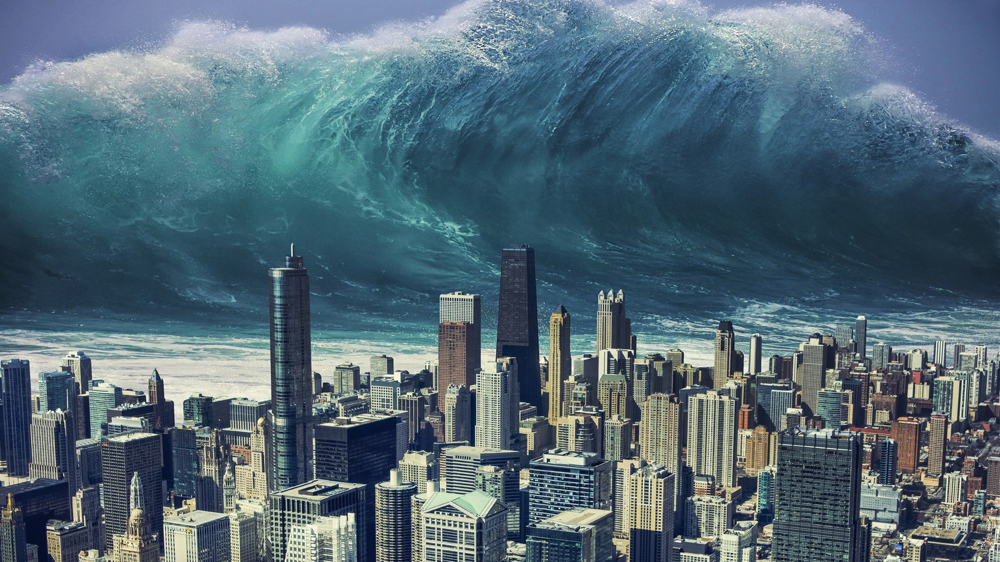
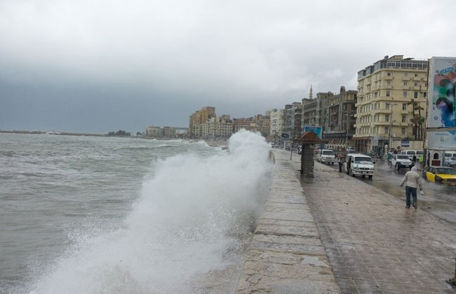
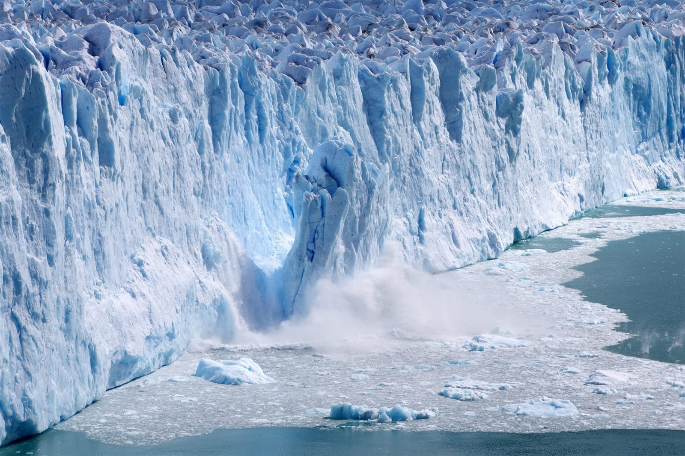

ارتفاع مستوى سطح البحر
مخاوف عدة ترتبط دائمًا بظاهرة التغيرات المناخية وارتفاع منسوب سطح البحر، وخاصة بالنسبة لمنطقة دلتا نهر النيل، كونها تُعد من أكثر المناطق المهددة بالغرق على مستوى العالم، بسبب ارتفاع منسوب سطح البحر وتأثير النوات البحرية وخلافه على المناطق الساحلية.
كان أوضح المهندس محمد غانم، المتحدث الرسمى باسم وزارة الموارد المائية والرى، أن مواجهة دلتا مصر لخطر الغرق بسبب التغيرات المناخية قد أصبحت أمرًا واقعيًا الآن، ولم تعد مجرد تكهنات أو معلومات نظرية كما كان في الماضي، الأمر الذي جعل الدولة المصرية تنفذ العديد من المشروعات المتعلقة بحماية الشواطئ فى دلتا نهر النيل.

خبير موارد مائية: الغازات الضارة يمكنها أن تقضى على مدن ساحلية كاملة
وبالتواصل مع الدكتور عباس شراقي، أستاذ الجيولوجيا بجامعة القاهرة وخبير الموارد المائية، قال إن مستوى سطح البحر قد ارتفع بالفعل 20 سم خلال آخر 100 عام، وذلك ما تم رصده وإثباته عمليًا على جميع الأصعدة؛ ما خلق اهتمامًا واسعًا بكيفية الحفاظ على الشواطئ من خطر الغرق.
وأضاف: "هناك خطر آخر يواجه المناطق الساحلية بجانب ارتفاع مستوى سطح البحر، وهور ارتفاع درجات الحرارة، والتي زادت أيضًا بنسبة درجة مئوية واحدة خلال القرن الأخير، ولكن إن زادت أكثر من 4 درجات مئوية، قد تختفي نهائيًا مدن عدة تحت أمواج البحر، مثل الإسكندرية وبورسعيد ودمياط".

وأشار خبير الموارد المائية إلى ذوبان الجليد في القطبين الشمالي والجنوبي بسبب استخدام الغازات الضارة التي تؤدي في النهاية إلى ارتفع درجات الحراة، ثم زيادة نسبة المياه في البحار والمحيطات، لذا من الضروري نشر التوعية بتقليل استخدام الغازات الضارة، التي تُعد سببًا رئيسيًا في تلوث المناخ وارتفاع في الحرارة، مثل غاز ثاني أكسيد الكربون وغاز الميثان وغاز أكاسيد النيتروجين.
واستكمل "شراقي" حديثه مع "الدستور"، مؤكدًا أن كل هذه الأسباب تؤدي إلى ارتفاع منسوب سطح البحر، وفي حالة أن ارتفاع مياة البحر بمقدار متر واحد سيتم إغراق نصف مليون فدان من المناطق الساحلية ذات الارتفاع المنخفض.
واختتم أن الحل الأمثل لحماية مناطق الدلتا من خطر ارتفاع منسوب سطح البحر، هو إنشاء طريق على شواطئ البحار يكون مرتفعا عن سطح الأرض بعدة أمتار، وبالتالي يمكن حجز المياه خلفه، وحماية القاطنين في المدن الساحلية من خطر الغرق.
مشروعات حماية الشواطئ
كانت قد أعلنت وزارة الري والموارد المائية عن المشروعات التي نفذتها لحماية مناطق الدلتا من خطر ارتفاع منسوب سطح البحر، ففي مدينة مرسى مطروح تم تنفيذ أعمال حماية فى خليج مطروح الواقع فى قلب المدينة شواطئ الأبيض، كما يتم حاليًا تنفيذ مشروع آخر يساعد في التكيف مع التغيرات المناخية فى الساحل الشمالى ودلتا نهر النيل، وهو 69 كيلو أعمال حماية.
وأعلنت الوزارة عن أنه تم الانتهاء من من 58 كيلو داخل 4 محافظات (بورسعيد، دمياط، كفر الشيخ، والبحيرة) وجار العمل حاليًا فى الانتهاء من 11 كيلو أخرى داخل محافظة الدقهلية، وكُل ذلك سيحمي الطريق الدولى الساحلى من بورسعيد حتى الإسكندرية، والأراضى الزراعية الواقعة خلفه.
أما فى محافظة الإسكندرية، فقد نفذت الوزارة أعمال أخرى لحماية الكورنيش وقصر المنتزه وقلعة قايتباى، بجانب ما تم تنفيذه مسبقًا داخل منطقة رأس البر لحمايتها من النحر الذي تعرض له الشاطئ، فضلًا عن مصب فرع رشيد والعديد من المناطق فى الدلتا.

دراسة مصرية
تشهد المنطقة الساحلية نموًا سكانيًا وتطورات لا تتعارض مع الطبيعة الديناميكية للنظام الساحلية، لذا ركزت الدراسة التالية على التغيرات في رأس المياه الجوفية وهبوط الأرض التصاعدي نتيجة ارتفاع مستوى سطح البحر.
ووفقًا للدراسة التي أعدها مجموعة من الباحثين المصريين، أبرزهم الأستاذ المساعد بقسم هندسة المياه والمنشات المائية، الدكتور إسماعيل عبد العاطي، ونُشرت في أغسطس 2022، فقد تم تطبيق النموذج العددي لـ SEAWAT على حوض دلتا النيل عند منفذ فرع النيل رشيد لمحاكاة الوضع الحالي والسيناريوهات المستقبلية.
وتّبين أن المنطقة الساحلية لدلتا النيل تُعد بيئة ديناميكية ومعقدة للغاية، لها آثار اقتصادية مهمة على الحكومات ومديري السواحل، وتتعرض مصر للتهديد بسبب العديد من المشكلات البيئية، مثل هبوط الأرض التصاعدي، وملوحة المياه الجوفية.
كانت ناقشت الدراسات السابقة تأثير ارتفاع مستوى سطح البحر على الانحدار وهبوط الأرض وتآكل الشاطئ، ولكن لا تزال هناك فجوة في فهم التأثير على هبوط الأرض الصاعد وعلاقته بالتراجع، وبالتالي، يهدف هذا البحث إلى تحديد تأثير هبوط الأرض الصاعد في شمال غرب دلتا النيل.
يعتبر هبوط الأراضي في المناطق الساحلية بسبب ارتفاع مستوى سطح البحر من المخاطر الطبيعية التي تواجه تطوير شبكات الممرات المائية والبنية التحتية وهياكل الري وشبكات الصرف والطرق والمباني.

استخدمت هذه الدراسة هبوط الأرض التصاعدي وفقًا للرءوس الحالية للمياه الجوفية لتقدير هبوط الأرض الصاعد في المستقبل بناءً على التغيير المتوقع لرءوس المياه الجوفية كنتيجة للتأثير المحتمل.
وأظهرت التحليلات أن المتوقع هو 5.67 و14.51 و26.71 سم للعام 2020 و2040 و2060 على التوالي، كما أوضحت النتائج أن ارتفاع مستوى سطح البحر أدى إلى زيادة في منطقة الدراسة، وتستخدم الزيادات المتوقعة في تقدير هبوط الأرض المستقبلي باستخدام تحليل الانحدار المطور، كما ارتفعت معدلات هبوط الأرض المتوقعة للأعوام 2020 و2040 و2060 من الأجزاء الجنوبية إلى الشمالية من منطقة الدراسة عند نتوء رشيد.
ولوحظ اتجاه تنازلي لقيم هبوط الأرض التصاعدية مع زيادة رءوس المياه الجوفية، من حين لآخر، ستساعد المعادلات التي تم الحصول عليها مع معاملات الارتباط العالية على التنبؤ بقيم هبوط الأرض التصاعدية للسيناريوهات المستقبلية لرأس المياه الجوفية بثقة عالية، والتنبؤ بهبوط الأرض الصاعد في المستقبل من خلال تطبيق تحليل الانحدار الخطي الأقل مربعًا.
خبير بيئى: جميع دول العالم مهددة بخطر الغرق
قال الدكتور عبدالمسيح سمعان، أستاذ الدراسات البيئية بجامعة عين شمس، إن الاحتباس الحراري ظهر تأثيره القوي في ارتفاع مستوى منسوب سطح البحر، الذي يعرض المناطق الساحلية لخطر الغرق على مستوى العالم، فضلًا عن ارتفاع حدة الأعاصير، والتغيرات الكبيرة في حجم واتجاه الأمطار.
وتابع: "عام 2015 كان بداية حديث العالم عن كيفية التكيف مع التغيرات المناخية، ومن هناك اتخذت دول العالم خطوات صارمة من أجل الحماية من خطر التقلبات المناخية، وبالأخص غرق المناطق الساحلية بسبب ارتفاع منسوب سطح البحر، ووقعت مصر مؤخرًا على اتفاقية هامة، تعمل على الحد من غاز الميثان، الذي يُعد سببًا رئيسيًا في حدوث تغيرات المناخ".

أكد سمعان في حديثه أهمية استخدام الطاقة المتجددة وتقليل الانبعاثات الضارة من أجل الحفاظ على المناطق المصرية من خطر التقلبات المناخية، مؤكدًا أن مصر مصر تستخدم الطاقة الشميسة وطاقة الرياح بنسبة 20% من حجم الطاقة، ومن المتوقع في نهاية العام الحالي، أن تصل نسبة الاستخدام إلي 40%.
ونّوه أستاذ الدراسات البيئية بجامعة عين شمس، إلى أهمية التوسع في إنتاج طاقة الهيدروجين الأخضر من المياة المالحة والعذبة، كونه لا يحمل أى نسب من الكربون الضار، ويقضي بشكل كبير على انبعاثات غازات الاحتباس الحرارى، التى تتسبب فى تعرض المناخ لأضرار كبيرة.